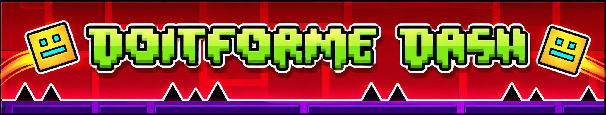

Capture your run
Name your pattern and arm recording. Switch to the game’s level-selection screen, press F8, and play using Space.
YOUR JUMPS. YOUR PATTERNS. YOUR REPLAY.
Make your next run a repeat performance.
Capture your Geometry Dash spacebar inputs, save a pattern, and play it back with a desktop companion that runs right on your PC.
Windows 10 / 11 · 64-bit · Geometry Dash required
FROM FIRST JUMP TO NEXT RUN
Open Geometry Dash yourself. DoItForMe Dash handles the recording and playback alongside it.
Name your pattern and arm recording. Switch to the game’s level-selection screen, press F8, and play using Space.
Press F9 to stop and save. Your recording stays in your Documents folder, ready for another run.
Select a saved pattern and arm playback. Return to the same level-selection screen, press F8, and watch it run.
ONE DASHBOARD. BOTH MODES.
Record a new pattern or choose one you’ve saved. The local dashboard keeps the session controls and activity log together.
The public website doesn’t control your game. These controls live in the installed app.

Return to the game. Press F8.
Same level. Your saved inputs.
Controls shown for illustration.
Live recording and playback run in the installed app.
READY FOR YOUR NEXT RUN?
One installer. A desktop shortcut. No Python, build tools, or command lines to set up.
Download for WindowsVersion 1.4.5 · Windows 10 / 11, 64-bit
Requires Steam and your own copy of Geometry Dash.
This release is unsigned. Windows may display a publisher or reputation warning.
Installer SHA-256 checksumYour patterns are saved in Documents\DoItForMe Dash\patterns.
BEFORE YOU PRESS PLAY
The installed app opens its dashboard in your browser, but the recording and playback engine runs locally on your Windows computer. This website is where you download the app and find instructions.
No. The app synchronizes using a visible scene transition, not an exact game simulation frame. Use the same level, game speed, and frame-rate settings. Performance differences or game updates can affect timing.
Locally, in Documents\DoItForMe Dash\patterns. Keep a backup of that folder before changing computers or removing files. The website does not store your recordings.
Arm recording or playback in the installed dashboard first. Then switch focus to Geometry Dash and display the level-selection screen with its clickable title/banner. Don’t start from the pause screen. Check the app’s session log if visual synchronization fails.
During recording, F9 stops and saves; F10 cancels without saving. During playback, F9 stops the run. Keep the app running while using its dashboard.
Python and build tools are bundled or compiled into the application; you don’t install them separately. The installer is designed to install for your Windows user without requesting administrator access.